WORTHINGTON'S WORKSHOP
Visit The Lower Riverina - Berrigan Shire, NSW
|
|
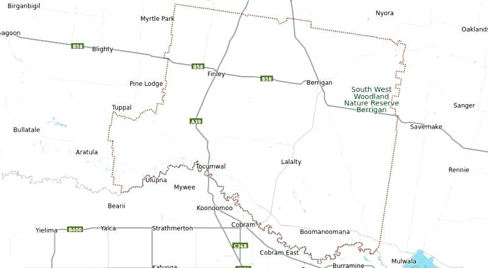 Map Of Berrigan Shire Berrigan Shire is a local government area in the southern Riverina region of New South Wales, The Shire lies on the New South Wales State border with Victoria formed by the Murray River. The Shire is intersected by the north-going Newell Highway and west-going Riverina Highway. It is 580 km south-west of Sydney CBD and 270 km north of Melbourne CBD. The Shire population is only 8,643 people as of the 2023 census. Berrigan Shire experiences a cool semi-arid climate with hot summers and cool winters with moderately low precipitation all year round. The highest temperature at Berrigan was 46.1C on 1st of February 1968; the lowest temperature was −4.4C on 10th of July 1965. The mean maximum temperature is 22.9C, the mean minimum temperature is 9.2C. Average annual rainfall is 443.3mm. The population of the complete shire is about half that of a Sydney council, which explains the long stretches of empty roads, apart from the large farms and orchards, the few hills and the extensive canal works for the irrigation systems. As you can see the distances and times across this shire are miniscule compared to Sydney, as a complete circle of the shire can be made in just over an hour. It is quite typical to be driving a road and not see another car for half an hour. Always adhere to the 50 km/h speed limits in towns. The best surprise is to take the back roads, only to be confronted by a huge harvester. Ensure safe passage by getting on to the outer edges of the road and slow down to prevent kicking up dust. This always results in a friendly wave, so wave back as a common courtesy. You will also occasionally encounter wandering mobs of cattle or sheep being driven between paddocks along the road. The best idea is to wait until the mob have passed, as animals can be unpredicatable. Wave to the farmer directing the move from a tractor or ute at the back. 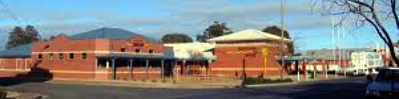 Berrigan Council Buildings on The Riverina Highway at Berrigan 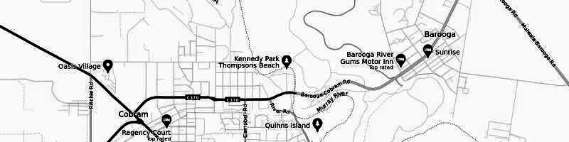 Layout of Cobram (VIC) and Barooga (NSW) Barooga with a population of 1,888 is the southernmost town of Berrigan Shire. It is 121 m above sea level and located 679 km south-west of Sydney via the Hume and Riverina highways and 264 km north of Melbourne via the Hume and Goulburn Valley highways. It is only 4km across the Murray River from Cobram (VIC), which has a population of 6,148 making it the main shopping and industrial area of the local region. Barooga is mainly a residential area regarded as a suburb of Cobram, as they share the same postcode and phone prefix. Being only two and a half hours drive from Melbourne, Barooga is a popular holiday destination because it offers two registered clubs, a 36-hole golf course, a nine hole mini golf course and river attractions plus a large Botanical Garden. Other attractions include a twenty-metre swing bridge, Quicks Beach, walking tracks and the Barooga Markets. 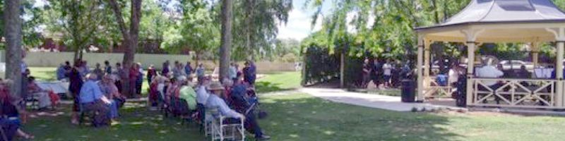 Barooga Botanical Gardens on Vermont Street Barooga has a shopping strip known to the locals as "Barooga Mall". There is an IGA Express Supermarket, a General Store with a take away and petrol station, Pirate Petes (Dollar Store), the Post Office, a Bakery, a Pharmacy and a Repco vehicle service centre capable of servicing European cars. When dining out there is the Barooga Hotel, the Barooga Sporties, Cobram Barooga Golf Club and Happy Village Chinese Restaurant and Take Away. 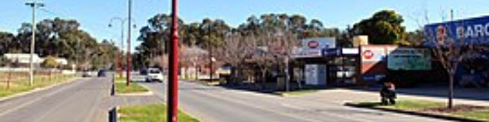 Barooga Mall on Vermont Street (Main Road) Barooga has an Australian rules football team and a cricket team. Golf is played at the 36 hole Cobram Barooga Golf Club. Other sports clubs include soccer, netball, tennis, table tennis, bowls and mini golf. Barooga has hosted three championship mini golf events. Cobram Barooga Golf Club also hosted the 2022 TPS Murray River golf competition. 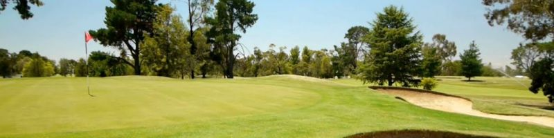 Cobram - Barooga Golf Club Barooga Facilities
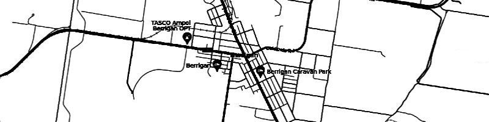 Layout of Berrigan Berrigan with a population of 1,260 is the centre of the local Berrigan Shire Council. It is 119m above sea level and located 678 km south-west of Sydney via the Hume and Riverina highways and 313 km north of Melbourne via the Hume and Goulburn Valley highways. It is a traditional small country town surrounded by rich agricultural land known for its rice production, vineyards, maize, grapefruit, potatoes, cherries, tomatoes and dairy cattle. The primary appeal of the town is the way the style is a reminder of the 1950s. 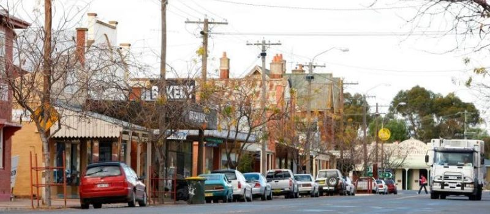 Chanter Street / Riverina Highway in Berrigan Popular sports in Berrigan include Australian rules football with a team competing in the Picola & District Football League, netball, golf, bowls, and tennis. Horse racing is also popular, with the Berrigan Gold Cup — held on the same day as the Victoria Derby — attracting a large crowd. 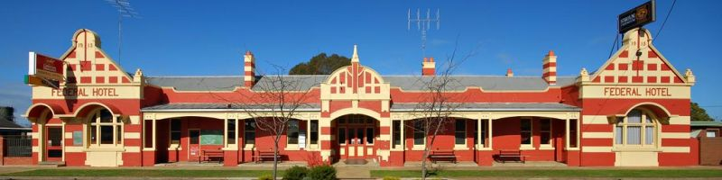 Federal Hotel in Berrigan Berrigan Facilities
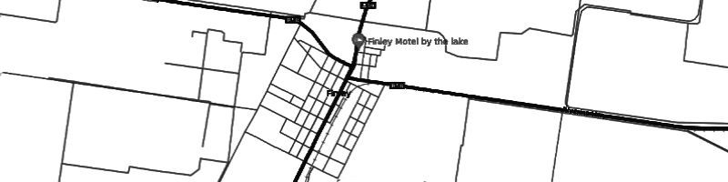 Layout of Finley Finley with a population of 2,519 is the largest town in the Berrigan Shire. The town is located approximately 140 kilometres (87 mi) west of Albury on the intersection of the Newell Highway and Riverina Highways. It is 659 km south-west of Sydney on the Hume and Sturt Highways, Lockhardt, Urana-Lockhardt, Cocktegong, Back Berrigan and Berrigan-Oatlands Roads then the Riverina Highway. It is 288 km north-east of Melbourne on the Newell, Goulburn Valley and Hume Highways. The Finley Agricultural and Pastoral Association was formed in 1912 and held its first show on the 17th of September 1913. The same agricultural show is still held annually on the first Sunday in September (Father's Day). 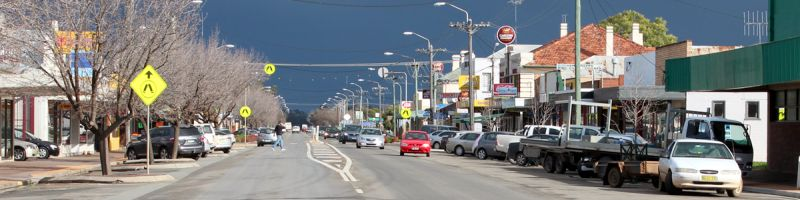 Murray Street / Newell Highway in Finley In 1935, construction on the Mulwala Canal began in order to provide employment and bring water to the area's rich farmland, with irrigation reaching the area in 1939, celebrated with a 'Back-To -Finley' event. This enabled the region to prosper with beef and dairy cattle, sheep, wheat, rice, barley, maize and canola. The Finley Railway Precinct is listed as a heritage site due to its pioneer station group with the building and platform located at ground level (Yass Town being the only such other building). The yard contains much of the original layout and buildings with intact goods shed, gantry crane, lamp room as well a small second station building. 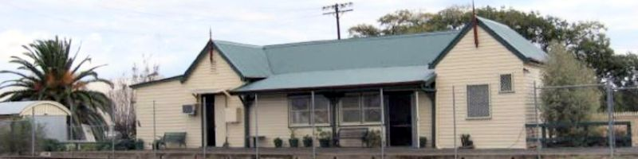 Finley Station Australian rules football, cricket and netball are all very popular in the town. Sporting teams include the Finley Football Club, which competes in the Murray Football League. The town also offers soccer, touch football, basketball, tennis and a Pony Club. The Finley Rodeo Committee holds an annual rodeo every January and Finley Apex Club hosts a tractor pull every February. Finley has an 18-hole green grass golf course and two bowling green locations. Finley Facilities
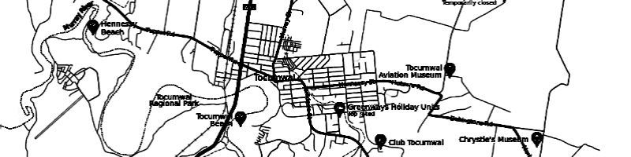 Layout of Tocumwal Tocumwal with a population of 2,682 is on the south-western edge of the local Berrigan Shire Council. It is 116m above sea level and located 675 km south-west of Sydney via the Hume and Riverina highways and 270 km north of Melbourne via the Hume and Goulburn Valley highways. It lies on the northern bank of the Murray River, which forms the border with Victoria. It is the winner of several "Tidy Town" awards and is affectionately known as "The Jewel in the Crown That Is The Riverina District" Tocumwal is a seven-hour drive from Sydney and three hours from Melbourne. You can also fly or get the train to Albury and rent a car for the scenic 1h 40min drive.The Newell and Murray Valley Highways join at the Murray River, and form part of the main road route National Highway A39 between Brisbane and Melbourne. Surrounded by a stunning red gum forest, Tocumwal is an idyllic town perfect for fishing, camping, aerial adventures and relaxing by the river. On the banks of the magnificent Murray River are 24 riverside beaches close to town, you’ll find plenty of swimming, boating and fishing opportunities. Visit the Information Centre to find out about hiring watersport equipment. Tocumwal Foreshore Park is also home to the iconic Big Murray Cod, a structure which celebrates the prized local catch. Tocumwal Features Club Tocumwal boasts the home of the Southern PGA Trainee Championships. A magnificent 36 hole championship course, with a reputation for excellence. The well maintained, sand belt course is suitable to play all year round. Tocumwal boasts more daylight-sun hours than the Gold Coast. The club is equipped with a stunning 36 hole championship golf course, brand new bowling greens, on course Pro Shop, dining and entertainment facilities, plus corporate and function facilities, The golf courses & bowling greens are framed by native trees and abounding with bird life, often having kangaroos and wild ducks grazing on the lush fairways. Location: Barooga Road, Tocumwal, Phone: (03) 5874 9111, email: reception@tocumwalgolf.com Website: https://www.clubtocumwal.com/ 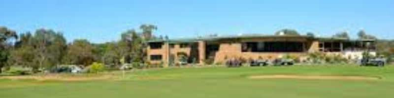 Club Tocumwal Southern Riverina Gliding Club is a small, community owned gliding club, based at Tocumwal Aerodrome (previously known as McIntyre Field), with a friendly and welcoming atmosphere for all. It offers joy flights and a range of training from your first flight all the way to cross country flying. The club operates every weekend, though special arrangements can be made to accommodate your schedule. Most people take as little as 25 – 80 flights before they fly solo. Many young pilots fly solo before that are even old enough for a drivers licence! Once solo, a pilot is not abandoned but is supervised and guided so as to make progress in a safe and structured way. Location: 135 Burma Road, Tocumwal, Phone: 0427 141 241, email: renner@netspace.net.au Website: https://southernriverinaglidingclub.com.au/ 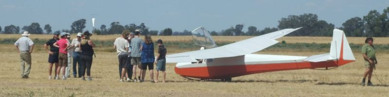 Discussing the weather at The Aerodrome Tocumwal Railway Heritage Museum is a heritage-listed closed railway station in the town of Tocumwal. It was once the break-of-gauge between the broad gauge Victorian Railways Tocumwal line from the south, and the standard gauge New South Wales Government Railways Tocumwal line from the north. However, only the line from Victoria is still open for grain traffic and the occasional tour train. there are three museum areas. The front museum incorporates photos and memorabilia dating back to 1908 and a steam train mural. There is rail and Lion’s Club memorabilia, along with tea rooms in the middle room and the third museum is furnished with old furniture and memorabilia, together with a working model train display. 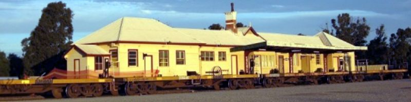 Tocumwal Railway Heritage Museum at the Railway Station Strawberry Fields was founded in 2009 by a trio of young dreamers. With less than 1,000 attending the inaugural three day event in East Gippsland, Strawberry Fields has now grown to attract 10,000 patrons from across the globe and has solidified its reputation as one of Australia’s best known art, music and camping festivals. After a decade at various venues surrounding Tocumwal, the festival now takes place each summer at its permanent home “The Wildlands” - a 300ha private property only 15 minutes from Tocumwal township, featuring over 1km of direct frontage to the iconic Murray River. With customised sustainable infrastructure in place, attendees can bask in the revelry of four days of live music, large scale art, workshops, and wild river swimming in one of the most stunning natural environments Australia has to offer. Location: 467 Tuppal Road, Tocumwal, Website: https://www.strawberry-fields.com.au/ Strawberry Fields Concert at Tuppal Road Tocumwal Chocolate School is where you can take your love of cooking to the next level – or just indulge in sweet treats. Classes range from tempering and using truffles to learning ganache and spraying shells for Bon Bons. For a unique experience, book into the riverside studios accommodation complete with an outdoor spa, and enjoy an unlimited supply of chocolate with your stay. Location: 5 La Belle Circuit, Tocumwal Phone: 0425 780 392, Email: info@tocumwalchocolate.com.au Website: https://tocumwalchocolate.com.au/ 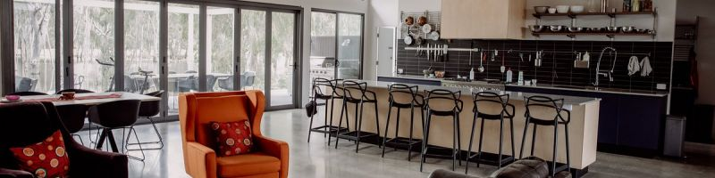 Tocumwal Chocolate School Tocumwal Facilities
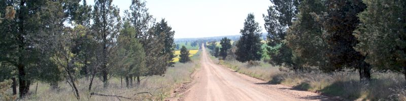 The northern-most dirt section of the Back Barooga Road near Berrigan, NSW The two localities in the local shire are Boomanoomana and Lalalty. Both do not contain villages and are simply a historical rememberance of a place that may have had a School or a Post Office. Lalalty has a District Hall and a Public School converted to a private residence on the dirt Lalalty School Road as another turnoff from Berrigan Road. Lalalty also features The Drop Hydro Electric Power Plant, which is abot half way between Berrigan and Barooga on the Berrigan Road. Boomanoomana in the south-east, appears to have nothing of historical significance, but has hills, quarries and plentiful water supply canals feeding the many large farms and orchards in the region. 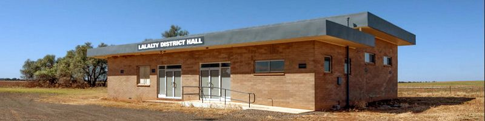 Lalalty District Hall on Berrigan Road at Lalalty 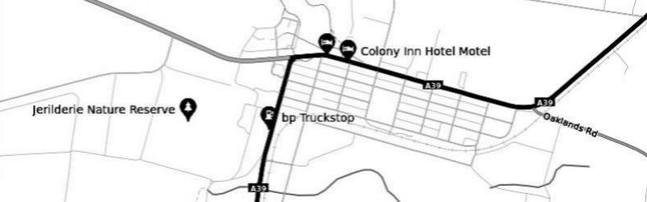 Layout of Jerilderie Jerilderie has a population of 922 and is 36 km north of Berrigan on the Berrigan Road and Newell Highway. Jerilderie sits on the banks of Billabong Creek, the longest creek in Australia. The area produces a quarter of all tomatoes grown in Australia, as well as being a prime Merino stud region. Additionally, Jerilderie has a diverse number of crops such as rice, olives, wheat, canola, mung and soybeans, onions, liquorice, grapes and a number of cattle farms. The Tocumwal Railway Line is a closed railway line that linked Jerilderie to Narrandera in the north and Tocumwal to the south. The line commenced at Narrandera station and then headed south west to Tocumwal station where there was a break-of-gauge with the Victorian Railways Goulburn Valley line from Shepparton. The line was opened to Jerilderie in 1884, extended to Berrigan in 1896, Finley in 1898 and Tocumwal in 1914. The line was closed south of Jerilderie in 1986 and to the north in 1988. 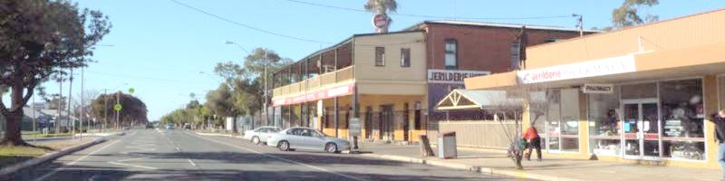 Jerilderie Hotel on Jerilderie Street / Newell Highway (c) Percival Cumnock 12/07/2009 Ned Kelly and his gang visited in 1879, making it the only NSW town to have been raided by the Kelly Gang. The Ned Kelly Raid Trail of 1879 takes you to the 16 sites visited by Ned Kelly and his gang in 1879, with six of the buildings directly associated with the visit still standing. The current Jerilderie Police Station features no less than 19 structural components mimicking Ned Kelly's distinctive face plate. Some examples include walls made of differently toned bricks making up his image to storm drains with holes cut in the same pattern. The outlaws captured the town's two policemen and imprisoned them in their own cell before dressing in the police uniforms. They then told the locals that they were reinforcements from Sydney sent to protect them from the notorious Kelly Gang. Later the gang held up the local Bank. More than two thousand pounds were stolen before Kelly and his gang walked to the Telegraph Office and chopped down the telegraph poles. He and his gang held 30 people hostage overnight in the Royal Mail Hotel where Ned Kelly wrote the famous Jerilderie Letter which documents Kelly's passionate pleas of innocence and desires for justice for both his family and the poor Irish settlers of Victoria's north-east. It has also been described as the Ned Kelly 'manifesto' and remains the only source providing a direct link between the Kelly Gang and the actions they are accused of. Ned Kelly wanted his 56-page Jerilderie letter published in what is now called the Old Printery Building, the home of the Doing the Bolt exhibition about bushrangers. The manifesto was used as the basis for Peter Carey’s True History of the Kelly Gang, a novel that won the Man Booker Prize. 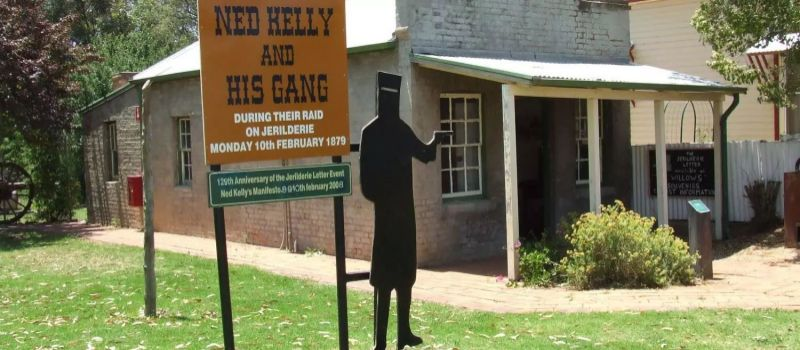 Jerilderie Historic Telegraph Office at 17 Powell Street in Jerilderie Sir John Monash Jerilderie is the childhood home of Sir John Monash, honoured military commander whose image adorns the Australian one hundred dollar note. He attended and achieved dux at Jerilderie Public School, a record of which can be seen on a board in the school’s head office. The Sir John Monash Memorial Drive, created in his honour, is just off the Newell Highway, just outside the town on the way to Finley. Lord Loudoun In the early 2000s, a Medieval scholar, Dr Michael Jones, claimed Queen Elizabeth's claim to the throne was illegitimate because King Edward IV, who reigned from 1461 to 1483, was not of royal blood; he was the illegitimate son of a French archer. Dr Jones concluded that, tracing the correct path, The 14th Earl of Loudoun (usually known simply as Michael Hastings; 1942–2012), who migrated to Jerilderie in the 1960s, was the true King of the United Kingdom and the Commonwealth. |